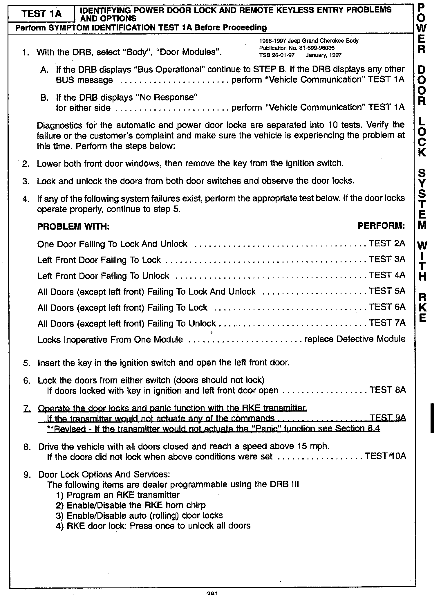
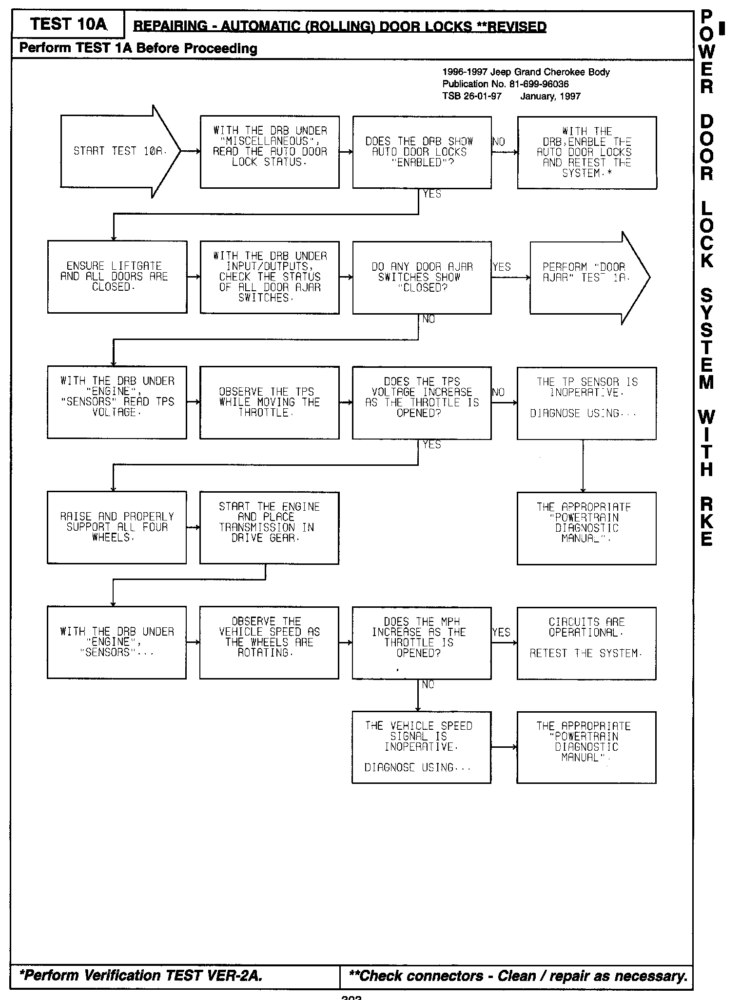

Antitheft Systems - Test Procedures Revisions
NUMBER: 26-01-97GGROUP: Miscellaneous
DATE: January, 1997
REVISIONS ARE HIGHLIGHTED WITH BLACK BARS IN THE MARGIN
Models:
1996-1997 Jeep Grand Cherokee Body Diagnostic Manual - Publication Number 81-699-96036
DESCRIPTION OF CHANGES
Revision to the remote keyless entry test procedure.
n��X:

281
Revision to the automatic door lock test procedure.
Z�X:

303